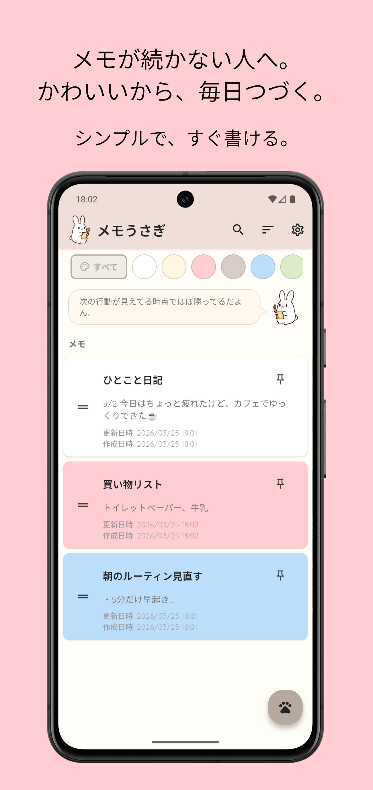
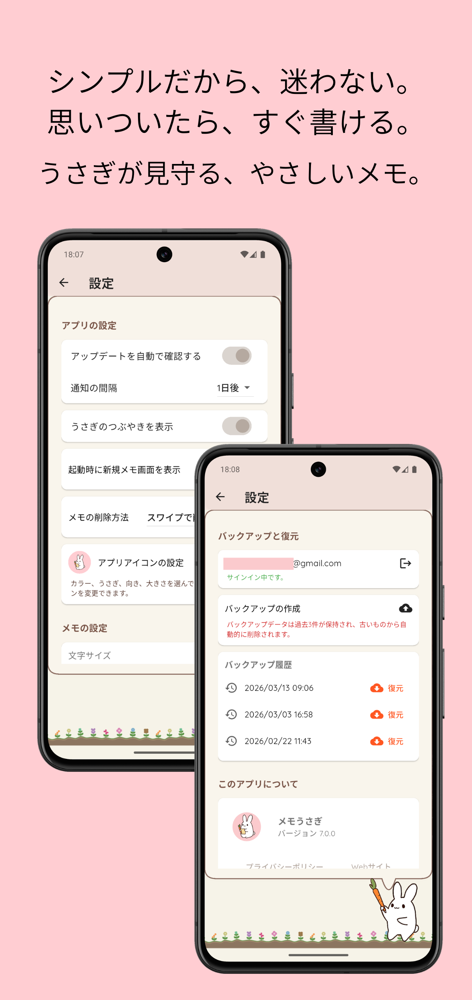
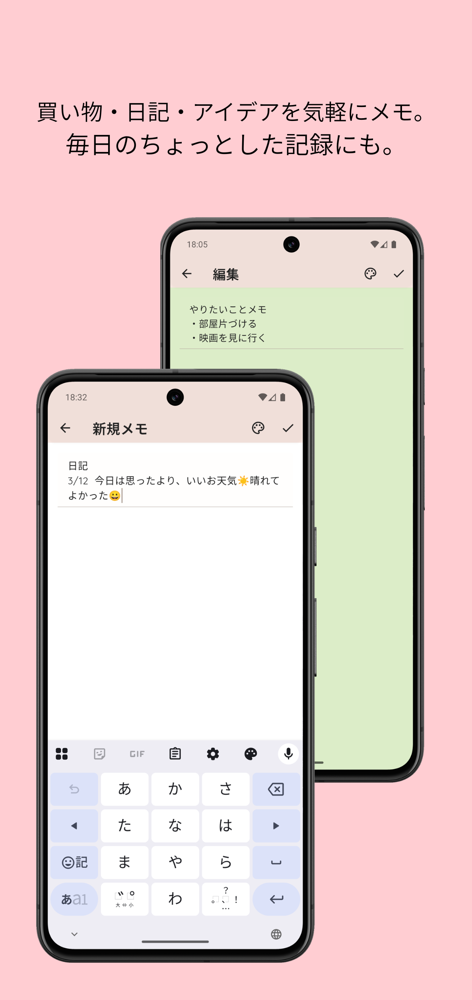
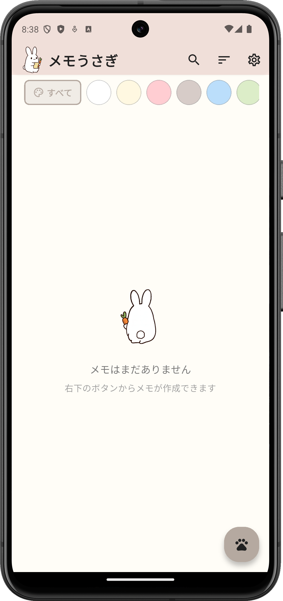
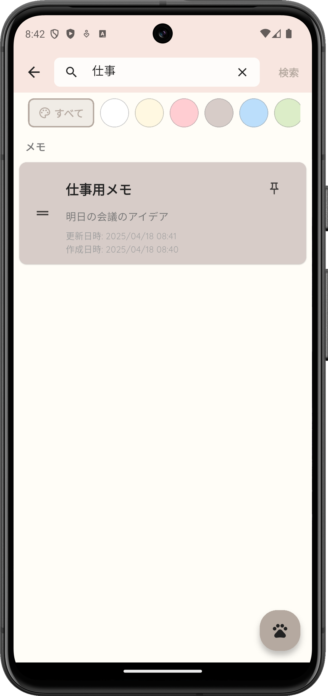
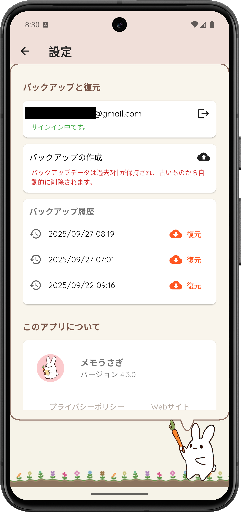

ほっとする世界観
見ているだけで気持ちがほぐれる、うさぎモチーフのUI。 「書かなきゃ」というプレッシャーを、「書きたい」に変えてくれます。
Memo Usagi
前のページに戻る忙しい日々に、小さな安らぎを。
うさぎと一緒に、あなたの想いを大切に残しませんか？ やさしいデザインが、毎日のメモ習慣を心地よいひとときに変えてくれます。

毎日使うものだからこそ、心に寄り添う使い心地を大切にしました。
見ているだけで気持ちがほぐれる、うさぎモチーフのUI。 「書かなきゃ」というプレッシャーを、「書きたい」に変えてくれます。
複雑な機能は一切なし。 直感的に使えるから、忙しい合間でも、大切なアイデアを逃さずキャッチできます。
買い物リストから、ふとした気づきまで。 どんなメモも優しく受け止める、あなただけの自由なノートです。
アプリを開いて、今すぐ書きたいことを入力するだけ。
短いメモでも大丈夫。まずは残すことから始めましょう。
落ち着いたときに読み返して、やりたいことを整理しましょう。
あなたの毎日に「メモうさぎ」がいる風景をイメージしてみてください。






ふと思い出したことを、かわいく残して、心をかろやかに。
メモうさぎは、プライバシーを第一に考えています。
入力した内容が外部に送信されることはありません。安心して、あなただけの自由なメモを楽しんでください。